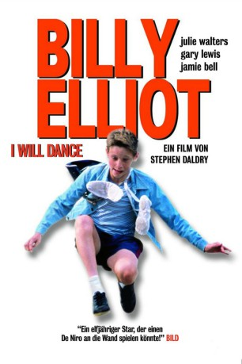
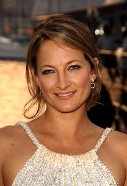

#838 Billy Elliot - I Will Dance
Alternativ: Billy Elliot
Auszeichnungen: für 3 Oscars nominiert 1 BAFTA-Awards gewonnen
 
 IMDB-Wertung: 7.7 / 10
IMDB-Wertung: 7.7 / 10  Metascore: 74
Metascore: 74 
Als sich die Box- und Ballettgruppe im nordenglischen Durham die Halle teilen muss, entdeckt der elfjährige Billy den Tanz für sich, hängt die Boxhandschuhe erleichtert an den Nagel und beginnt mit Begeisterung zu trainieren - heimlich. Sein streikender Minenarbeiter-Vater und -Bruder würden es nie verstehen. Nur seine Ballettlehrerin unterstützt ihn und ermutigt ihn bei der Royal Ballet School in London vorzutanzen.
Jahr: 2000
Dauer: 110 Minuten
FSK: 6
Land: England Studio: UIPTonspuren: DTS - ,
Untertitel: Deutsch,
Auflösung: 1080p (1920x1040) Größe: 5816 MB
Genre: Drama, Musik, Liebe
Regisseur:  Stephen Daldry
Stephen Daldry
Drehbuch: Lee Hall
Soundtrack: Stephen Warbeck
Darsteller:
 Jamie Bell als Billy
Jamie Bell als Billy Gary Lewis als Dad
Gary Lewis als Dad Julie Walters als Mrs Wilkinson
Julie Walters als Mrs Wilkinson- Stephen Mangan als Ballet Doctor
- Patrick Malahide als Principal
- Barbara Leigh-Hunt als Vice-Principal
- Neil North als Tutor 3
- Lee Williams als Tutor 4
-  Zoë Bell als Sandra
- Tracey Wilkinson als Geography Teacher
- Darren Jacobs als Dancer in 'Swan Lake' , uncredited
- Catherine Turgoose als Teenage Party Guest , uncredited
- Jean Heywood als Grandma
- Jamie Draven als Tony
- Stuart Wells als Michael
- Mike Elliot als George Watson
- Billy Fane als Mr Braithwaite
- Nicola Blackwell als Debbie
- Carol McGuigan als Librarian
- Joe Renton als Gary Poulson
- Colin MacLachlan als Mr. Wilkinson
- Janine Birkett als Billy's Mum
- Trevor Fox als PC Jeff Peverly
- Charlie Hardwick als Sheila Briggs
- Denny Ferguson als Miner
- Dennis Lingard als NCB Official
- Matthew James Thomas als Simon
- Paul Ridley als Tutor in medical
- Imogen Claire als Tutor 1
- Diana Kent als Tutor 2
- Petra Siniawski als Teacher
- Merelina Kendall als Secretary
- Merryn Owen als Michael, aged 25
- Adam Cooper als Billy, aged 25
- Dylan Barnes als PC White , uncredited
- Martin L. Evans als Young Teenager , uncredited
- Adam Galbraith als Dancer in 'Swan Lake' , uncredited
- Hendrick January als Dancer in 'Swan Lake' , uncredited
- Sharon Percy als Jenny Poulson , uncredited
- Ken Richardson als Police Officer , uncredited
- Leonard Silver als Dancer , uncredited
- Lee Smikle als Dancer in 'Swan Lake' , uncredited
- Damian Winter-Higgins als Dancer in 'Swan Lake' , uncredited
Datei: X:\2000\Billy Elliot - I Will Dance (2000, FSK6, 1920x1040).mkv seit 31.03.2015
Festplatte: HD 1996-2002
 Es gibt insgesamt 82 Filme in der Gruppe '2000'
Es gibt insgesamt 82 Filme in der Gruppe '2000'